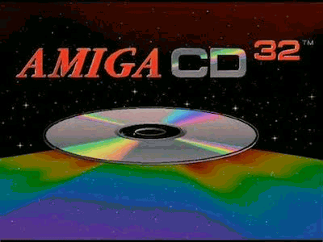
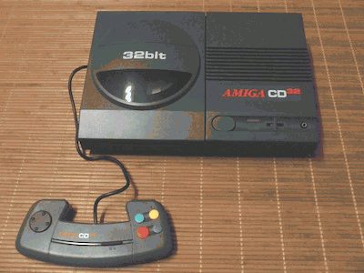
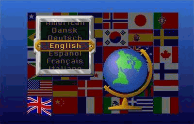
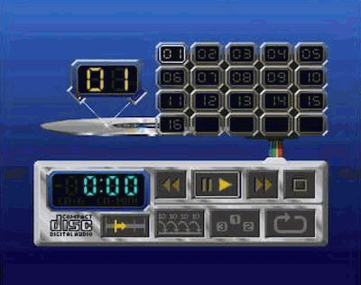
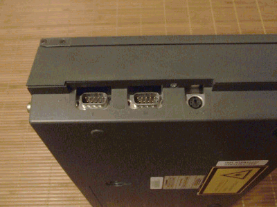
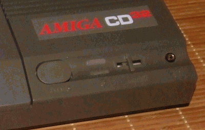
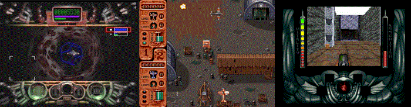
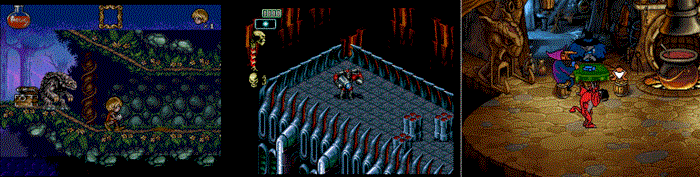

The Solana Vanishing Act
The Solana Vanishing Act

The world's first 32Bit console. Well, technically Fujitsu released FM Towns Marty in Japan a few months earlier, but it had a 16Bit bus, so we could still give that credit to the CD32. The console looks surprisingly cheap, but also with some nice touches. It has a mixture of thoughtfullness and cheap costs savings. It was born in the last period of Commodore, thrown together in a desparate attempt as the company was trying to make money from the gaming market. Objectively speaking, the console itself is not a beauty, though to my biased eyes it looks pleasing.

Commodore's engineers were certainly tasked with putting together a console from existing parts as quickly as possible. So the CD32 is technically an Amiga 1200 with the addition of a CD drive. It's been stripped of all the excess stuff, but they've left the option to expand it, so you can add a module to make it a full-fledged Amiga, and even an MPEG1 accelerator module (FMV) to watch VideoCDs.
The designers have also thought about making it easier to port games developed from other platforms, so the CD32 got a custom chip called Akiko, which controls the CD and can do hardware Chunky2Planar conversion.
Contrary to popular belief, it has not been spared the ability to save games. It has 1Kb of Flash memory, which can store up to 100 game saves and a highscore list. There is also a graphical interface (localizedl), which can be accessed from the boot screen. You can see a list of the saved games in memory and the software is intelligent enough that when the 100 slots get used up, it will start overwriting the oldest one. You can also lock certain slots so that they are never overwritten. Of course, the games will also speak the language we choose for the system (if they include localisation).

The Audio CD player interface is equally excellent. It has a host of options that's on par with a more serious desktop player: shuffle, repeat, adjustable length intro, you can turn tracks on/off one by one and sort the order in which they play. The icing on the cake is that a animation of the CD disc spins when the disc starts spinning and the laser light on screen reads the disc where the real laser is.

There's an RCA audio output for audio and S-Video, TV modulator and composite output for video. 2 joystick or mouse connectors and a keyboard option.In addition, there is of course an headphone jack out with separate volume controls. The CD drive is double speed and the firmware of the microcontroller handles CD-I, MPEG and Photo CDs (rewritable CDs are not handled). The CD reader itself is a Sony KSM-2101BAM, for which Chinon made the circuitry. The CD driver has a standard 18-bit (8x oversampling) DAC which, in addition to providing excellent quality, can mix external sources such as MPEG audio with Amiga audio via the digital audio input on the CD32 expansion connector.
The power supply connector is round, which differs from the other Amiga's, which are sqare. At first glance this seems a bit stupid, but it's not by accident. On other Amiga power supplies the power button in on the power supply itself, while the CD32 power supply is always in an on state (like the C64's), and the power switch in on the console. If you could use the CD32's power supply with an other Amiga, you could easily damage the machine. The CD32 and the Commodore A590 (hard drive) power supplies are exchangable.
Why is it still cheap? Because there are many little details that show off the cost savings. For example, the joypad connectors have been stripped of their cover plate, so the motherboard connectors are routed directly to the plastic casing, and you can almost "see" inside the machine through the opening above them.

The volume control for the headphones is a shoddy little plastic stick, it's a miracle it didn't break off immediately and I'm actually surprised that it's still intact on many machines today. The Power and Disk LEDs have been reused from the Amiga 1200 as is, and they are placed in a recessed curved place on the case, while the LED panel is flat, so it doesn't follow the curves of the machine. The power button is coming straight out of the C64 (leftover C64 parts).

As the Amiga was never really popular in the US, the CD32 was debuted in the UK and later made available in European an other markets, with moderate success. Over 100.000 units were sold. But unfortunately Commodore's debts and lawsuits prevented the company to launch the console in the US market, declaring bankruptcy before it.
Unfortunately not many CD32 exclusive titles were released, most of the games are re-releases or enchanced versions of Amiga 1200 (and Amiga 500) games. Amiga owners of the time had little incentive to buy the machine. Despite the console's moderate success at launch, it's very doubtful that it would have remained competitive on the market with the arrival of the Playstation and the Amiga userbase declining due to moving to IBM compatible PC-s, mostly due to it becoming a requirement at school or the desire to play Doom and other 3D games the Amiga was lacking. Nowadays, however, the CD32 is a great option for people who like retro games and want to revisit the Amiga games library. Games on CDs are longer lasting than their floppy counterparts, no need to swap floppies or messing around with installing the game, and as a bonus, most CD32 versions include CD audio music and intro animations.
Microcosm, Banshee, Alien Breed 3D
The Adventures of Flink, Skeleton Krew, Litil Divil